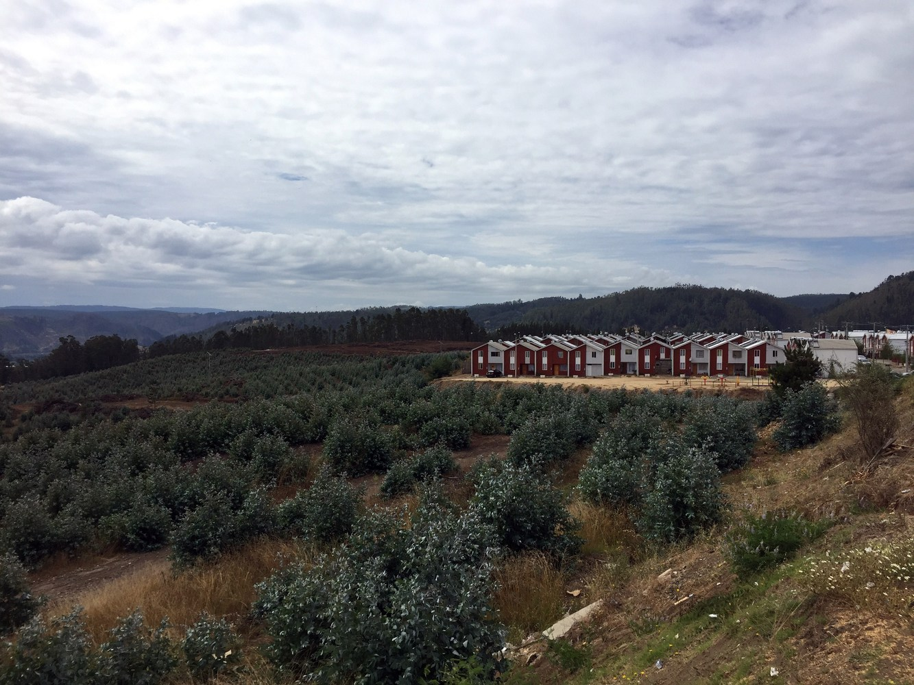
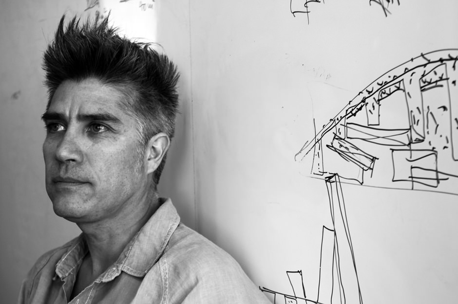
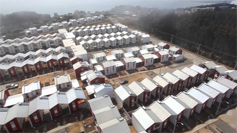
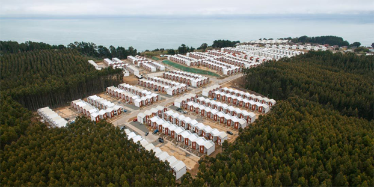

Villa Verde
Simone Di Mauro, Arianna Perrone, Andrea Mondini

From the architect. Arauco is a forestry company that called us in 2009 to develop a plan to support their workers in the process to have access to their definitive house. We were asked to develop a set of typologies within the current housing policy for Fondo Solidario de Vivienda I and for FSV II . These designs would be a contribution of the company to their workers, a kind of subvention, so that housing committees could use them when applying for the regular system of public funds.
The importance of this project is that on the one hand, for the first time, it allowed us to think about a design for the upper niche of the housing policy. If we developed an innovative and competitive typology, we would broaden our possible contribution to social housing. We could have taken one of our own more economic typologies and used the extra money to finish them, filling the void that families were expected to complete. But we thought of once again applying the principle of incremental construction and prioritization of the more complex components, this time with higher standards both for the initial and the final scenario.
ABOUT

Alejandro Aravena graduated from the Pontifical Catholic University of Chile in 1992 and established Alejandro Aravena Architects in 1994. Aravena was a visiting professor at Harvard Graduate School of Design from 2000–05 and is the Elemental-Copec Professor at Universidad Católica de Chile. Aravena co-authored Los Hechos de la Arquitectura (ARQ, 1999), El Lugar de la Arquitectura (ARQ, 2002) and the monograph Elemental: Incremental Housing and Participatory Design Manual (Hatje-Cantz, 201). He was a member of the Pritzker Prize Jury from 2009 to 2015, and is an International Fellow of the Royal Institute of British Architects.
In 2006, he became the executive director of ELEMENTAL, a for profit company with social interest.
In July 2015, Aravena was named Director of the Architecture
Section of the Venice Biennale, with the responsibility for curating the 15th International Architecture Exhibition to be held in Venice in 2016.
Half A House Builds A Whole Community
Elemental’s Controversial Social Housing
In Chile, a middle-class family may inhabit a house of around 80 square meters, whereas a low-income family might be lucky enough to inhabit 40 square meters. They can’t afford a large “good” house, and are henceforth often left with smaller homes or building blocks; but why not give them half a “good” house, instead of a finished small house? In the 1970s a professor by the name John F.C. Turner, teaching at a new masters program at MIT called “Urban Settlement Design In Developing Countries”, developed an idea surrounding the concept that people can build for themselves. 99% Invisible has covered a story, produced by Sam Greenspan, on how this idea has evolved, and what it has turned into: Half A House.

